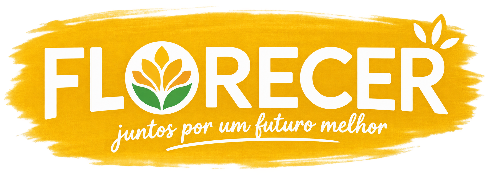
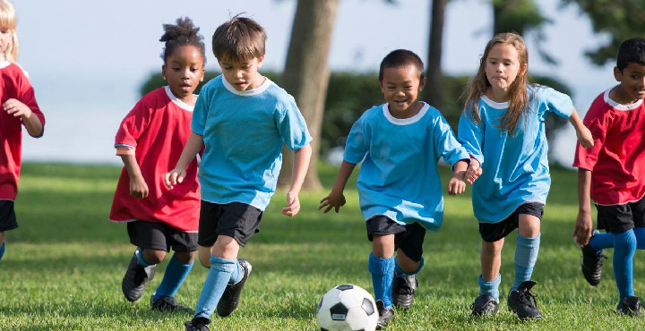
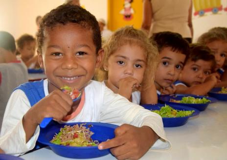

Futuro na Leitura
Incentivamos a alfabetização e a literatura oferecendo livros, cantinhos de leitura e contação de histórias para crianças carentes.

Por uma infância brilhante
Somos uma organização dedicada a ajudar crianças e adolescentes em situação de vulnerabilidade.
Incentivamos a alfabetização e a literatura oferecendo livros, cantinhos de leitura e contação de histórias para crianças carentes.

Aulas de futebol, arte marcial e atletismo no contra-turno escolar para promover a saúde, o trabalho em equipe e a disciplina.

Garantimos refeições diárias equilibradas para reforçar o desenvolvimento físico e cognitivo de crianças em risco nutricional.
Nosso objetivo é contribuir para o desenvolvimento, educação e bem-estar de crianças e adolescentes, criando oportunidades para um futuro melhor.
Faça Parte Dessa Equipe